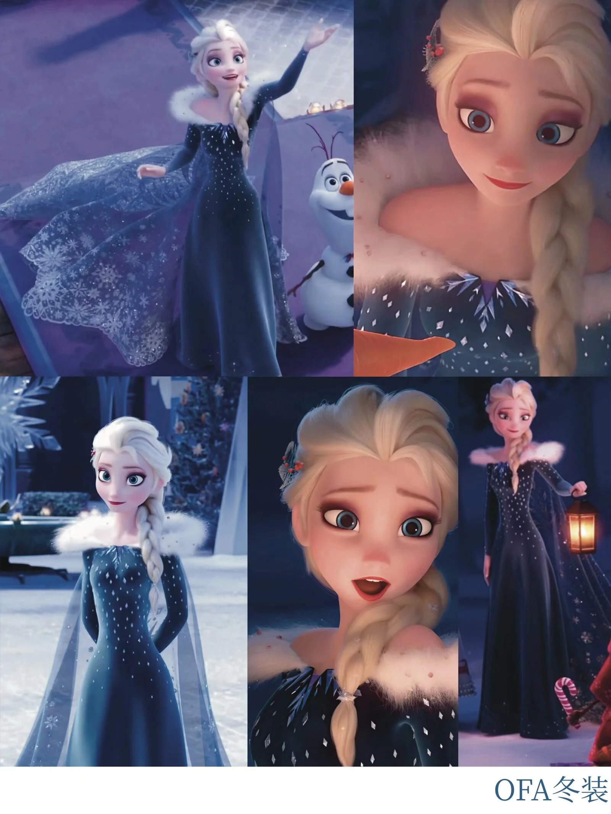
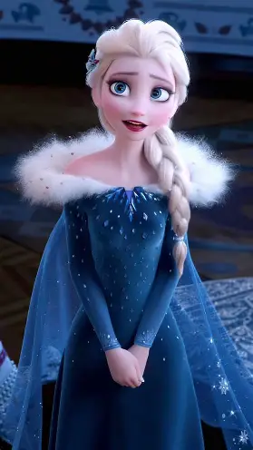

番外造型 · 不一样的艾莎
📖 这一页讲什么
《冰雪奇缘》系列还有两部重要的官方番外短片——《Frozen Fever》（安娜生日）与《Olaf's Frozen Adventure》（雪宝的圣诞大冒险）。这两部里艾莎的造型虽只是「客串」，却给出了主系列电影之外的两种轻松样貌。

🎂 生日惊喜装（Frozen Fever）
在《Frozen Fever》里，艾莎给安娜准备了一场生日惊喜。她穿的是一身轻盈的夏日绿裙——和主系列沉重的冰雪色调完全相反，露出锁肩、长裙摆飘逸，像是终于可以「不端着」的姐姐。这是艾莎在番外里少见的轻松一刻。

❄️ 雪宝大冒险装（Olaf's Frozen Adventure）
在《Olaf's Frozen Adventure》里，艾莎穿着厚重的圣诞冬装（深色冬裙 + 厚斗篷）陪着雪宝寻找它的传统。这是艾莎少数几个「温暖冬日」造型——色调沉静、剪裁保守，但姐妹和雪宝的互动让整个画面都暖了起来。
🎬 两部番外的定位与意义
《Frozen Fever》（2015）和《Olaf's Frozen Adventure》（2017）是 F1 与 F2 之间的两部官方番外短片。它们的叙事定位是「日常切片」——不推进主线剧情，而是展示角色在和平时期的生活状态。对艾莎而言，这两部番外的意义在于：它们展示了她「学会做自己」之后的样子。在 F1 中，她始终处于紧张、恐惧、防御的状态；而在番外中，她可以轻松地给妹妹准备生日惊喜、可以陪着雪宝过圣诞节、可以不戴手套地出现在公众面前。这些「日常」的瞬间，恰恰是 F1 结局「Let's never close them again」的具体体现——她终于可以活在「不隐藏」的日常里了。
🎨 番外造型的设计逻辑
Frozen Fever 生日装：绿色夏裙的设计选择很有意义——绿色是「生长、新生」的颜色，与艾莎在 F1 中的蓝白色调形成对比。这暗示她正在从「冰雪女王」的身份中走出来，成为一个更完整、更温暖的人。露肩设计也与 F1 中「包裹严实」的加冕礼服形成对照——她不再需要用衣物来「隐藏」自己。
OFA 圣诞冬装：深色冬裙 + 厚斗篷的设计回归了「寒冷」的色调，但与 F1 中的「冷」不同——这里的冷是「冬日的温暖」，是「和家人一起过圣诞」的冷。斗篷的设计参考了斯堪的纳维亚传统服饰，与 F1 加冕礼服的挪威风格一脉相承，但更加休闲、日常。这个造型暗示：艾莎已经把「女王的身份」和「日常的生活」融合在了一起——她既是女王，也是一个会陪雪宝过圣诞的姐姐。
⛄ Once Upon a Snowman：雪宝视角的艾莎
2020 年的番外短片《Once Upon a Snowman》从雪宝的视角重述了 F1 的故事，其中展示了艾莎在《Let It Go》中创造雪宝的完整过程。这部番外的特别之处在于：它让观众看到了艾莎「创造生命」的那一刻——她不是在「使用魔法」，而是在「把对妹妹的爱具象化」。雪宝的性格（天真、乐观、爱夏天）正是艾莎内心深处「被压抑的童真」的投射。从这个角度看，雪宝不仅是艾莎的魔法造物，更是她「真实自我」的一面镜子。
🎮 其他客串造型
除了官方番外短片，艾莎还在其他迪士尼作品中客串，这些造型给出了主系列之外的更多可能性。


无敌破坏王2（2018）：在迪士尼公主集结的经典场景中，艾莎以现代休闲服装亮相——褪去了王冠和礼服，穿上了舒适的日常装。这个客串虽然只有几分钟，但却给出了一个重要的暗示：艾莎的「冰雪女王」身份之外，她也可以是一个普通的女孩。现代服装的设计选择（休闲、舒适、无装饰）与她在主系列中的「承重」造型形成了鲜明对比。
圣诞番外冬日装：在圣诞主题的番外内容中，艾莎的冬日装更加休闲、温暖——厚毛衣、围巾、雪地靴，与 OFA 中的「女王冬装」不同，这一身更像是「普通人的冬日」。这些番外造型共同构建了一个更完整的艾莎：她既是女王，也是姐姐；既会穿礼服出席典礼，也会穿毛衣过圣诞。